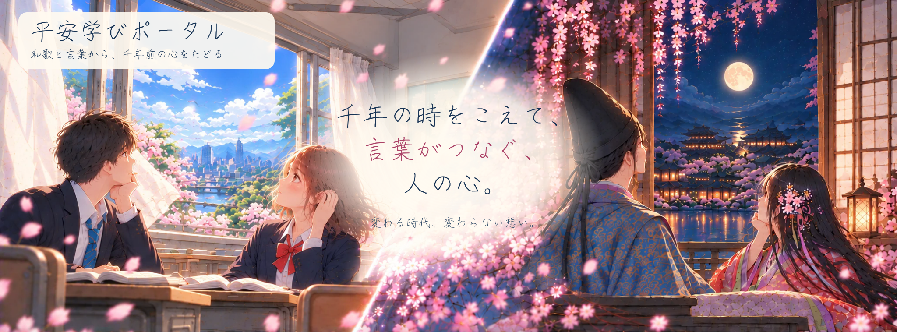

本物の写本を見てみよう
国文学研究資料館の資料で、仮名序の冒頭を実際の文字の形とともに観察できます。
古今和歌集の写本を見てみよう（国文学研究資料館）まだ、伝えられない言葉。
言葉の向こうを、確かめたい。
その気持ち、私にも分かる気がする。
千年の心を、たどりましょう。
「会いたい」は、千年前にも。
会えない時間に、
何を思う。
目覚めたくない、夢がある。
変わらない香り。変わる心。
景色は、言葉で生まれ変わる。
ない景色にも、美しさがある。
違う時代。同じ空の下。
思ひつつ 寝ればや人の 見えつらむ
夢と知りせば 覚めざらましを
小野小町 · 『古今和歌集』恋二・552番千年の時をこえて、
言葉がつなぐ、人の心。

君待つと我が恋ひ居れば
我が屋戸のすだれ動かし
秋の風吹く
額田王 ／ 『万葉集』
提供教材15首の区分を継承し、補充15首も本文・出典を照合して公開しています。各歌の出典と表記の異同は詳細ページで確認できます。
歌人名を選ぶと、その人の和歌を絞り込んで表示します。
KOKIN WAKASHŪ · KANA PREFACE
和歌は、どこから生まれるのでしょう。紀貫之が記したとされる『古今和歌集』の仮名序を、言葉の働きから読み解きます。
国文学研究資料館の資料で、仮名序の冒頭を実際の文字の形とともに観察できます。
古今和歌集の写本を見てみよう（国文学研究資料館）原文・教材掲載部分
やまとうたは、人の心を種として、
よろづの言の葉とぞなれりける。
「心」を植物の「種」に、「言葉」を「葉」に見立てています。目には見えない気持ちが、言葉として表れるという考え方です。
心に思ふことを、
見るもの、聞くものにつけて、言ひ出せるなり。
人は、見たり聞いたりしたものをきっかけに、自分の思いを言葉にします。『君待つと』の「秋の風」も、待つ気持ちを読み解く手がかりになります。
男女のなかをも和らげ、
猛き武士の心をも、慰むるは歌なり。
仮名序は、和歌には人と人の気持ちを結び、心を和らげる力があると述べています。今の歌やメッセージにも通じるでしょうか。
「人の心を種として」の「種」は、何をたとえていますか。
本文は提供された『古今和歌集 仮名序』教材の抜粋に基づきます。説明文は本サイト用の独自解説です。歴史的な内容と物語上の演出は区別して扱います。
本文の表記を保ったまま、現代の読みを確かめます。「思ふ→おもう」「言ひ→いい」「けふ→きょう」「こほり→こおり」「ゐ→い」「ゑ→え」。語の途中の「は・ひ・ふ・へ・ほ」が「わ・い・う・え・お」に対応する例がありますが、全ての文字を機械的に置き換えるわけではありません。
「寝れば」は「ぬれば」。漢字の読みも確認しよう。
いさ＝さあ、どうだろう。よろづ＝さまざまな・多くの。つれなし＝そっけない。心あて＝あて推量。ふるさと＝なじみの場所・古くから知る土地など。「あはれ」はしみじみした感動など、文脈に応じて意味に幅があります。
「にほふ」は色つやの美しさにも香りにも使います。「花ぞ昔の香ににほひける」では「香」が読みの手がかりです。
係助詞「ぞ・なむ・や・か」があると結びは連体形、「こそ」があると結びは已然形になるのが基本です。疑問の「や・か」にも注目します。結びの省略などもあるので、実際の文を確認しましょう。
例：「花ぞ昔の香ににほひける」――「ぞ」と、助動詞「けり」の連体形「ける」。
例：「しばしとてこそ立ちどまりつれ」――「こそ」と、助動詞「つ」の已然形「つれ」。
古文では、誰の動作かを毎回書かないことがあります。動作・会話・直前の人物・敬語などを手がかりに読みます。省略された主語はいつも「作者」だとは限りません。
「思ひつつ寝れば」の眠る人と、「人の見えつらむ」の現れる人は区別して考えよう。
尊敬語は動作をする人を高めます。謙譲語は動作する側を低め、動作の向かう相手などへの敬意を表します。丁寧語は聞き手・読み手への丁寧さを表します。
基本の例：「のたまふ」＝おっしゃる（尊敬）、「参る」＝参上するなど（謙譲）、「侍り・候ふ」＝あります・おりますなど（丁寧）。語の意味や働きは文脈で変わるので、誰から誰への敬意かも確認します。
『万葉集』は主に飛鳥〜奈良時代の歌を収め、8世紀後半にまとめられたと考えられます。『古今和歌集』は平安時代、905年の勅命による最初の勅撰和歌集（その後の整理もあります）。『新古今和歌集』は鎌倉時代、1205年に完成を祝う宴があり、その後も改訂されました。収録歌の作者が歌集成立時に生きていたとは限りません。
旧暦の季節、手紙のやり取り、題詠（だいえい：題に応じて詠むこと）、屏風歌（びょうぶうた：屏風の絵に応じた歌）なども読みの助けになります。貴族社会の例を当時の全ての人の生活として一般化しません。
上流貴族の邸宅では、中心となる寝殿と周囲の建物を渡殿などで結び、庭や池を設けました。室内は御簾（みす）・几帳（きちょう）・屏風（びょうぶ）などで仕切ります。壁で区切る現代の部屋と比べて、声や衣の気配がどのように届くか考えよう。
全ての人が同じ住まいに暮らしたわけではありません。物語の背景画像は創作です。
宮廷の衣服には、身分や場面に応じた決まりがありました。男性の正式な装束には束帯（そくたい）、女性の宮廷装束には、後世「十二単（じゅうにひとえ）」と呼ばれる装いがあります。「十二単」は常に12枚を着る、という意味ではありません。重ねた衣の色にも季節への感覚が表れます。
奈良時代に学んだ衣服の制度が平安時代に発達しました。現在の和服とも形が異なります。
貴族の装束の文様を調べる（京都国立博物館）手紙に和歌を添え、気持ちや季節の挨拶を届けることがありました。言葉だけでなく、紙・筆跡・添える花なども受け手の印象に関わります。相手の歌に応じる返歌（へんか）では、相手の言葉を受けて自分の思いを返します。
活動：同じ「会いたい」という気持ちを、風・月・香りのいずれかを使って表してみよう。自作の言葉と古典の原文を区別します。
貴族社会には男性が女性のもとに通う形の結婚があり、訪問や返事を待つ思いが歌の題材になりました。ただし暮らし方は時代・身分・事情で異なります。恋歌には創作や題に応じた歌もあり、歌の語り手をいつも作者本人と決めることはできません。
宮廷では七夕や、旧暦9月9日の重陽（ちょうよう）など、季節に関わる行事がありました。月を眺め、花や菊を題材に詠むこともありました。旧暦と現在の暦では、同じ月の数字でも季節の感じがずれます。
「長月」は旧暦9月。現代の9月の天気をそのまま歌の場面に当てはめないようにしよう。
漢字の形をくずした平仮名、漢字の一部を用いた片仮名が発達し、日本語で心情や出来事を記す表現が豊かになりました。かなは女性だけが使った文字ではありません。紀貫之の『土佐日記』も仮名による日記です。
『土佐日記』の資料（国文学研究資料館）この学習ページは現在準備中です。和歌一覧と詳細ページは利用できます。
開始文をコピーして、開いたGemに貼り付けましょう。
学習用の創作対話です。原文と資料で確かめましょう。Geminiのアカウントが必要です。ノートは自動送信しません。選んだ歌人のGemが別のタブで開きます。対話で入力した内容はGeminiに送信されます。
出典を記録し、比べるのに必要な短い部分だけを引用します。テーマの現代詩は創作です。
入力はこの端末のブラウザに保存します。共有端末では他の利用者が見ることがあります。端末の変更やブラウザデータの削除に備えて、ファイルにも保存してください。ファイルを別名で開くと保存先が変わることがあります。
8問・16問・全問を選べます
選択肢をタップ、または数字キー1〜4で回答。問題・選択肢は毎回シャッフルします。6種類・計290問から、8問・16問・全問を選んで出題。入試の語句は大阪産業大学附属高校・長野県公立高校の2023〜2026年度公表問題から抜粋し、選択肢・解説を独自に再構成。原設問を組み直した問題と、入試に使われた語句による独自問題を出典欄で区別します。場面文と解説は本サイトで作成しています。上の句・下の句は小倉百人一首の本文です。解説を読んで次へ進めます。最高記録はこの端末に保存し、鑑賞ノートとは別に管理します。人物・背景は創作イメージです。
右上のメニューから全コンテンツへ移動できます。物語は各話約30場面・選択2回。鑑賞ノートは後から記入できます。会話枠の中で選び、解説を読んで次へ進みます。
歌詞比較は用意した5曲、または自分で選んだ曲と和歌を選び、曲名・出典・短い言葉・読みを記入します。入力は端末内保存。全記録バックアップには比較ノートも含みます。AI対話はGemを別のタブで開き、開始文を貼り付けます。5人それぞれの共有Gemにつながります。
物語は5話・306場面。歌詞比較は12組で、組ごとの比較ノートは全学習記録のバックアップに含みます。ゲーム記録は出題数別に保存します。
ミニゲームは6種類・計290問から、8問・16問・全問を選んで出題。古語・仮名遣いは2023〜2026年度の公表入試から語句を抜粋し、設問語句と本文語句を区別して学習用に再構成しています。上の句・下の句は小倉百人一首の本文です。歌集本文との異同は解説欄で確認できます。最高記録は端末内の別保存で、学習記録バックアップには含みません。
目的：和歌の言葉を根拠に情景・心情を読み、本文の情報と自分の想像を分ける。古典と現代の生活をつなげ、多様な解釈を比べます。対象は中学3年生です。
機能：和歌30首の検索・出典確認、歌人図鑑、平安のくらし、古文の基礎、仮名序、5話の物語、6種類のミニゲーム、鑑賞ノート。物語は本文を読む入口で、通常学習だけでも使えます。セルフチェックは自動採点ではありません。
| 時間 | 活動 |
|---|---|
| 0〜5分 | 原文を読み、「書かれたこと／考えたこと」を確認。 |
| 5〜15分 | 1話を読む、または通常の和歌詳細で言葉を確認。 |
| 15〜25分 | 個人で引用・解釈・不確かなことをノートに記入。 |
| 25〜38分 | ペア・班で根拠を示して比較。別の解釈を本文に戻って検討。 |
| 38〜46分 | 100〜150字の鑑賞を改稿。原文と経験の区別を確認。 |
| 46〜50分 | 振り返り・保存。余裕があればミニゲーム。 |
「その景色は、どの言葉から見えた？」「歌に書かれたこと？ 自分が補ったこと？」「別の気持ちとしても読める？」「この一語を変えると効果はどう変わる？」「今の経験と、同じ点・違う点は？」
知識・技能：古語・仮名遣い・修辞を文脈で捉える。思考・判断・表現：具体的な引用を解釈と結び付け、断定できない点を示す。主体的な学習態度：他者の読みを受けて、根拠を確かめ、自分の鑑賞を見直す。ゲームの得点や読了数だけでは評価しません。
十分達成：引用・関係・留保が明確で、別解と比較できる。概ね達成：引用と解釈が結び付く。支援が必要：根拠の語を一緒に選び、「〜から〜と考えた」の型で整理する。
背景・人物・会話は創作。作者の伝記や史実と区別します。教科書掲載15首の区分は提供教材を継承し、補充15首は別資料で出典を照合しています。本文の異同は各歌の資料欄で確認してください。授業前に学校のChromebookでファイルの開き方・保存・外部資料の閲覧可否を確認します。恋愛の個人体験の開示は求めず、友人・家族や架空の例も使えます。
くらしの図は場所のボタンを選んで読めます。古文は「例と読み方を詳しく」を開き、確認問題に挑戦しよう。ゲームは数字キー1〜4、またはタップで答えます。迷った問題は結果画面から復習できます。三つの歌集と仮名序は別のカードから開けます。
①「和歌を読む」で歌を選ぶ。②原文・読み・語句を確認する。③情景や心情を表す言葉を選ぶ。④鑑賞ノートに、自分の読みと根拠を書く。⑤友達の読みと比べ、必要なら書き直す。
探し方：作者・歌の言葉・歌集で検索できます。ヘッダーの検索はCtrl＋K（Macでは⌘＋K）。歌集で絞り込みもできます。
物語：5話から選び、会話枠をタップ、またはEnter・Spaceで進めます。表示途中の操作は全文表示になります。選択肢は1・2キーまたはボタン。表示速度・履歴・演出を選べます。途中の位置と読了を端末に保存します。
ノート：①本文を引用、②そこから考えたこと、③言い切れないこと、④自分の鑑賞、の順に整理。「背景が桜だったから春」といった物語の画像だけによる断定を避けます。セルフチェックで根拠とのつながりを自分で確認します。
保存：入力すると同じブラウザの端末内に保存します。ログインやAIへの送信は不要です。「テキスト保存」と「学習記録をバックアップ」を使い、別の端末ではバックアップを読み込みます。共有端末には個人情報を書かないでください。ブラウザのデータ削除や保存の制限で記録が失われる場合があります。オンライン版とダウンロード版は別の保存先です。
五・七のリズムから、千年前の心へ。
人物・会話は創作。衣装は平安をイメージした表現です。
和歌って、難しい言葉を暗記するものなの？
まずは、誰かが心を動かした瞬間を、言葉で残したものだと考えてみよう。きれいな景色、会いたい気持ち、別れの寂しさ。みんなにも経験があるでしょう？
和歌は、日本で育まれた伝統的な詩歌です。五音・七音のリズムを大切にし、景色や出来事、心の動きなどを表してきました。「やまとうた」ともいいます。ここでいう「歌」は、いまの音楽の歌詞だけを意味する言葉ではありません。
身近な思いを伝える歌も、儀礼の場で詠まれた歌もあります。貴族の恋の歌だけでなく、旅・家族・働く人の暮らしなど、さまざまな題材があります。
「会いたい」って直接言わずに、景色で伝えることもできるんだね。
和歌と短歌って、別々の種類なの？
同じ段に四つを並べると、少し分かりにくいね。広い意味の「和歌」の中に、「短歌」や「長歌」などの形があるんだよ。
短歌
五・七・五・七・七
長歌
五・七の繰り返し＋七
ほかの歌体
旋頭歌など
| 名前 | 基本の形 | 覚えるポイント |
|---|---|---|
| 和歌 | 短歌・長歌などを含む | 特定の音数の形だけを表す名前ではない。平安時代以降は、主に短歌を指して使われる。 |
| 短歌 | 五・七・五・七・七 計三十一音 | 和歌の一つの歌体。現代でも作られ、近代以降は「短歌」の呼び方が一般的。季語は必須ではない。 |
| 長歌 | 五・七を三回以上繰り返し、最後に七を添えるのが基本 | 三十一音より長い形式。『万葉集』に多い。後に添える短い歌を「反歌」という。 |
| 俳句 | 五・七・五 計十七音 | 季語を入れる有季定型が基本。無季・自由律の俳句もある。短歌の後半を削るだけで俳句になるわけではない。 |
昔の五・七・五・七・七の歌も「短歌」の形なんだね。「古いから和歌、新しいから短歌」だけでは説明しきれないんだ。
和歌・短歌の伝統から連歌が生まれ、さらに俳諧の連歌へつながりました。その最初の句である「発句」を独立した作品として扱う流れを受け、近代に「俳句」という呼び方が広まりました。つながりはありますが、この入門では俳句を「和歌の一つの歌体」として図の中には入れません。
「長歌（ちょうか）」は和歌の歌体の名前です。三味線音楽の「長唄（ながうた）」とは、ここでは区別します。
まずは、いまの学校生活を詠んだ、練習用の短歌を読んでみよう。
放課後の 窓に残った 夕焼けを 君と見ていた 帰るのを待つ
本サイトの創作例。古典の和歌ではありません。
句を押すと、読みと音の数を確かめられます。
初めの五・七・五
後の七・七
「句」はリズムのまとまりです。上の句・下の句の境目が、必ず文の終わりになるわけではありません。この例も「夕焼けを／君と見ていた」と、意味が続いています。
基本の音数より多いものを「字余り」、少ないものを「字足らず」といいます。名作にもあります。初めは基本のリズムを確かめ、慣れたら、音数の違いが読み心地に与える効果を考えましょう。
「写真」は漢字二文字だから、二音？
声に出すと「しゃ・し・ん」。三つに分かれるよ。
五・七で数えるのは、文字の数ではなく、声に出すリズムの単位です。この単位を「拍」といい、この入門では「音」と呼びます。
古語は、一度に全部覚えなくてもいい。「いまの意味とは違う言葉」を一つずつ確かめよう。
「情景」は、歌から思い描ける場面。「心情」は、そこに表れる心の動きです。同じ歌でも読みは一つとは限りません。だから、本文の言葉を根拠にして、自分の読みを伝えることが大切です。
創作例には「君と見ていた」とある。誰かと夕焼けを見ていたことが分かる。
「帰るのを待つ」から、二人でいる時間を大切にしているように感じられる。ただし、帰るのを待つ理由は書かれていない。
相手に恋をしているか、何年生か、どの学校か。本文だけでは決められない。
想像するのは楽しい。でも、歌に書かれていることとは分けて話すんだね。
大きな出来事じゃないと、歌にできない？
帰り道の空、友達の一言、部活のあとの静けさでもいい。まずは、見たことを普通の言葉で書こう。音数を整えるのは、そのあとで大丈夫。
①場面を決める → ②気になったもの・言葉を選ぶ → ③自分の心の動きを書く → ④五・七・五・七・七のリズムに近づける。気持ちの名前だけでなく、景色や動作を添えると、読み手が場面を思い描きやすくなります。
入力はこのブラウザに保存します。端末・ブラウザを変えると共有されません。大切な記録は書き出してください。自動で作品の良し悪しを採点する機能ではありません。
八つの問いで振り返ろう。選ぶと理由が表示されます。何度でも選び直せます。
次は、千年前の人の言葉を読んでみたいな。
解説・会話・練習用短歌は本サイトが作成。和歌は、広い意味の歌体の総称と、主に短歌を指す用法を区別しています。俳句は有季定型を基本として案内し、無季・自由律の存在も補足しています。音数と文の切れは区別します。
確認日：2026年10月12日。授業では、まず01〜05を読み、創作と確認問題は学習時間に合わせて使えます。